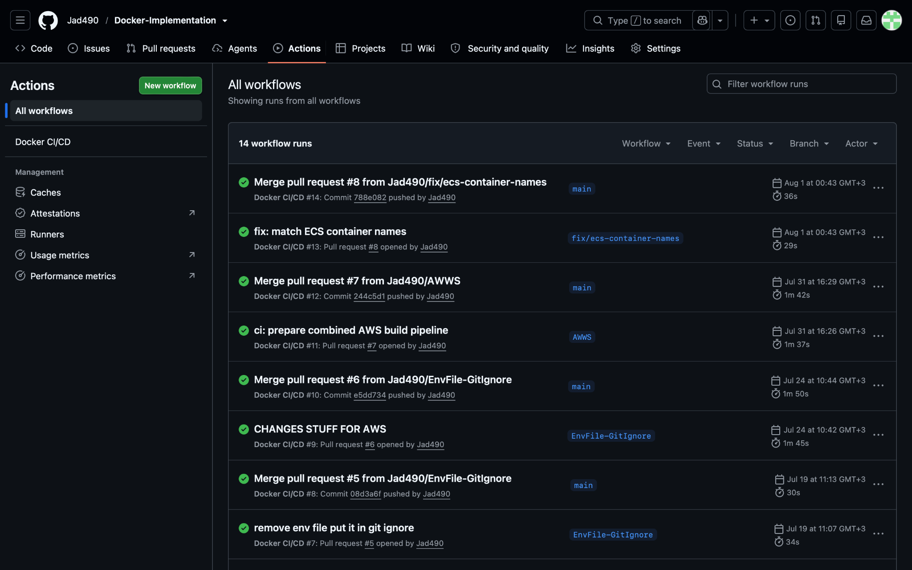
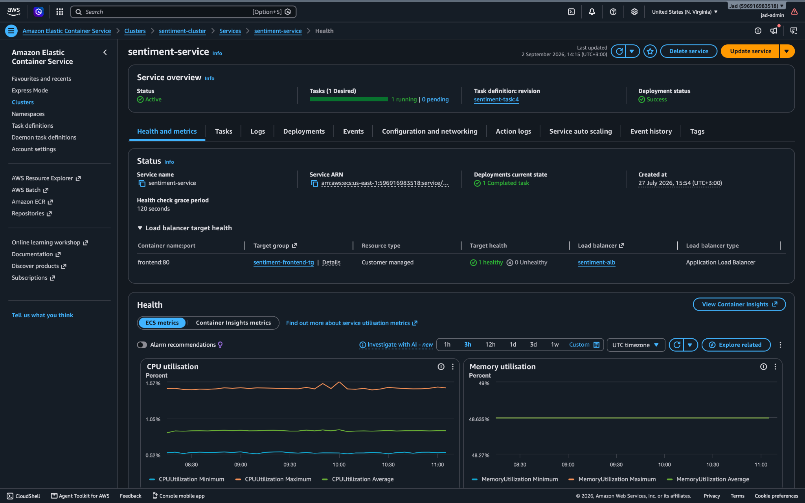
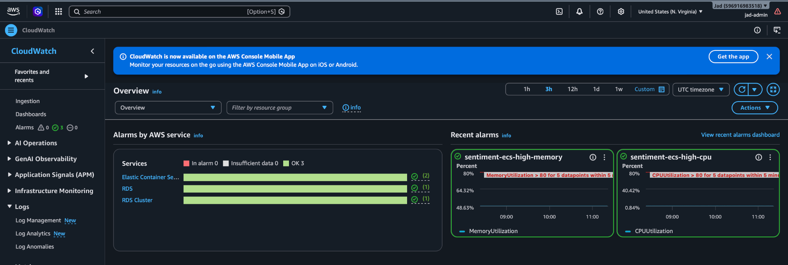
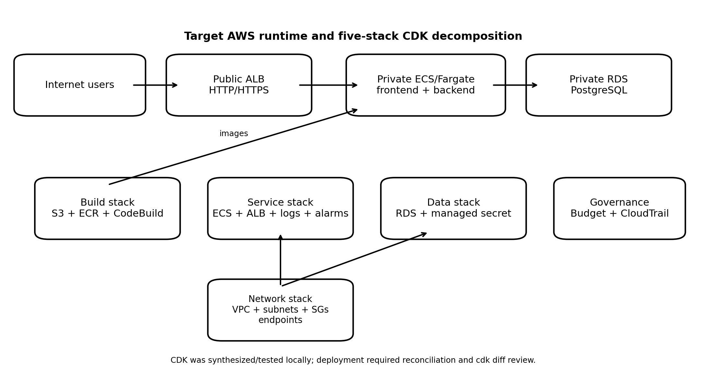

Languages
PythonC++Java
👋 Hi, I'm
B.E. in Computer & Communication Engineering · AI, Cloud & DevOps
An engineering student at the American University of Beirut interested in building complete technical systems — from AI and databases to backend services, containers, CI/CD and cloud infrastructure.
2022 – 2027
American University of Beirut (AUB), Beirut, Lebanon
2008 – 2022
Beirut, Lebanon
inmind.ai · Mkalles, Beirut, Lebanon
Jul. 2026 – Aug. 2026



Invigo · Dekwaneh, Lebanon
Jul. 2025 – Sep. 2025
American University of Beirut · Advisor: Prof. Mariette Awad
Aug. 2025 – Dec. 2025
American University of Beirut
Mar. 2025 – Dec. 2025
Beirut, Lebanon
Jan. 2025 – Present

Containerized and cloud-engineered a DistilBERT sentiment-analysis application with Docker Compose, GitHub Actions, AWS ECS/RDS/ECR/CloudWatch and a five-stack CDK model.
Designed a multi-branch library database with books, copies, members, staff, loans, reservations, payments and fines, supported by normalized SQL and automated workflows.
Built a real-time two-player racing game using Python sockets with hybrid client-server / peer-to-peer networking, PyQt5, chat, matchmaking and SQLite persistence.
Sampled video frames, used YOLO detections and a vision-language model to create structured scene-graph JSON, then rendered an interactive node-edge graph with stable IDs.